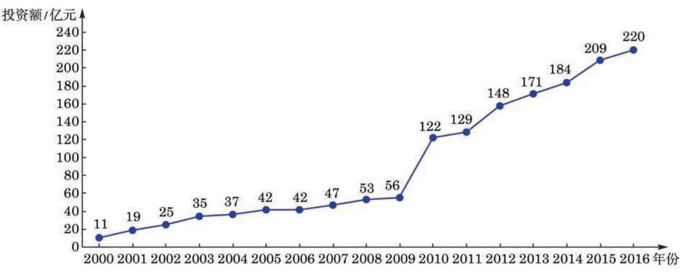

复习题A · 1
- 在研究硝酸钠的可溶性程度时,观测它在不同温度 (单位:℃) 的水中的溶解度(单位:g)，得到如下观测结果:
| 温度 | 10 | 25 | 40 | 50 | 55 | 60 | 65 | 75 |
| 溶解度 | 81 | 92 | 104 | 114 | 117 | 124 | 130 | 150 |
由此得到回归直线的斜率是___.
学生阅读版 / 沪教版高中数学
选择性必修第二册
第8章成对数据的统计分析 · 保留教材主线与原题
教材与正式教参整合
成对数据的统计分析方法是由两个变量的属性决定的. 统计中有三种常用类型的变量: 分类变量、顺序变量和数值变量.
(1)分类变量:它的值属于非数量范畴. 例如，性别变量的值为男和女；语文成绩分成合格和不合格；学科变量的值为体育、艺术、音乐、劳技、语文、数学、外语、物理、化学、生物、历史、地理、政治、信息科技等. 本章 8.3 节中把人群分为吸烟者和不吸烟者，以及患慢性气管炎者和不患慢性气管炎者，就是分类变量.
(2)顺序变量:它的值是有序的. 例如，月份 1 月、 2 月、 3 月、 4 月；国际足联世界杯将四强分为冠军、亚军、第三名、第四名；将顾客对服务的满意度分为非常满意、满意、一般、不满意、非常不满意; 在某次选举中投票分为赞成、反对、弃权; 等等.
(3)数值变量:它的值是可以作数学计算(如加、乘)的数值，如考分、收入、质量等.
成对的两个变量不一定是同一类变量,它们共有 9 种(3×3)可能的排列方式. 本章8.3 节所讨论的是两个分类变量的独立性检验(仅讨论分两类的简单情形)，而在本章 8.2 节进行线性回归分析的两个变量中,解释变量 既可以是数值变量也可以是顺序变量 (如年份),但反应变量 必须为数值变量.
相关分析和一元线性回归分析是研究两个变量关系的两个互为补充的方法. 相关分析描述了两个变量的相关程度，而回归分析则描述了因变量是怎样受自变量影响的。
为了得到两个变量之间是否具有一定关系的直观印象，可以用散点图来描述这些数据.
相关系数可以度量两个随机变量之间的线性关系. 相关系数 的值满足 , 且 越接近 1,两个随机变量的线性关系越密切.
回归方程代表了两个变量间的关系，回归直线通过散点图中数据点的中心. 回归直线的斜率越大，解释变量 的一个单位变化所引起的反应变量 的波动就越大.
回归方程可以通过最小二乘法得到. 回归直线能较好地反映一个变量对另一个变量的依赖情况，具有解释因果关系和预测的功能. 利用回归方程可以由解释变量的值来预测反应变量的值，从而给出反应变量真实值的一个估计.
列联表描述两个分类变量所有值的组合数据是如何分布的. 判断 列联表中出现的两个分类变量是否独立可采用 检验. 检验的一般步骤是:(1)提出原假设 ；(2)确定显著性水平 ；(3)计算统计量 的值；(4)统计决断:当 3.841 时，拒绝原假设，推断两个变量相关，否则，接受原假设，推断两个变量不相关 (即两个变量是独立的). 在实际情况下，是否完全拒绝原假设，还需要考虑样本量的大小.
| 温度 | 10 | 25 | 40 | 50 | 55 | 60 | 65 | 75 |
| 溶解度 | 81 | 92 | 104 | 114 | 117 | 124 | 130 | 150 |
由此得到回归直线的斜率是___.
| 广告费 /万元 | 4 | 2 | 3 | 5 |
| 销售额 /万元 | 49 | 26 | 39 | 54 |
根据上表建立的回归方程 中, . 9.4 的实际意义是什么?
| 学生编号 | 1 | 2 | 3 | 4 | 5 | 6 | 7 | 8 |
| 高一 | 84 | 85 | 71 | 74 | 60 | 58 | 51 | 82 |
| 高二 | 84 | 88 | 72 | 73 | 68 | 62 | 60 | 85 |
| 学生编号 | 9 | 10 | 11 | 12 | 13 | 14 | 15 | 16 |
| 高一 | 87 | 69 | 79 | 80 | 83 | 84 | 63 | 54 |
| 高二 | 88 | 73 | 84 | 82 | 83 | 83 | 66 | 67 |
(1)绘制这些成对数据的散点图；
(2)计算学生高一和高二数学成绩的相关系数. 根据此相关系数，你能得出什么结论?
| 男 | 女 | 总计 | |
| 读营养说明 | 28 | 16 | 44 |
| 不读营养说明 | 8 | 20 | 28 |
| 总计 | 36 | 36 | 72 |
根据表中的数据回答: 是否有 95%的把握判定性别与读营养说明之间有关系?
| 便利店编号 | 1 | 2 | 3 | 4 | 5 |
| 销售额 /万元 | 30 | 60 | 45 | 80 | 89 |
| 利润额 /万元 | 2.3 | 3.5 | 3.2 | 4.0 | 5.3 |
(1)绘制销售额和利润额的散点图；
(2)若销售额和利润额具有线性相关关系，试计算利润额 与销售额 的回归方程.
| 地区编号 | 销售额/ (万元/年) | 居民人数/ 万人 | 平均家庭总收入/ (万元/年) | 地区编号 | 销售额/ (万元/年) | 居民人数/ 万人 | 平均家庭总收入/ (万元/年) |
| 1 | 145 | 20.7 | 6.9 | 9 | 233 | 33.0 | 8.3 |
| 2 | 83 | 19.3 | 5.4 | 10 | 112 | 11.5 | 8.3 |
| 3 | 179 | 27.1 | 5.9 | 11 | 147 | 16.1 | 8.4 |
| 4 | 248 | 38.1 | 7.2 | 12 | 70 | 4.4 | 8.9 |
| 5 | 237 | 38.2 | 7.5 | 13 | 60 | 2.6 | 8.9 |
| 6 | 286 | 40.5 | 7.8 | 14 | 98 | 12.8 | 9.0 |
| 7 | 90 | 7.8 | 7.8 | 15 | 125 | 15.1 | 9.6 |
| 8 | 165 | 21.5 | 8.0 | 16 | 198 | 20.0 | 10.7 |
(1)试分别计算该商品年销售额与地区居民人数和平均每个家庭每年总收入的相关系数;
(2)选取(1)中相关系数较大的一对数据作回归分析.
(1)根据上述数据制作一张 列联表;
(2)这些数据能否说明感染红叶螨可引起植株对枯萎病的抗性这一结论？
| 家庭编号 | 家庭人均月收入 /元 | 家庭人均消费量 /元 |
| 1 | 5432 | 6.32 |
| 2 | 2336 | 3.52 |
| 3 | 3944 | 6.32 |
| 4 | 4656 | 21.60 |
| 5 | 9246 | 29.12 |
| 6 | 17512 | 76.00 |
| 7 | 8776 | 42.72 |
| 8 | 16624 | 54.80 |
| 9 | 14544 | 46.72 |
| 10 | 13600 | 41.68 |
| 11 | 5.976 | 26.00 |
| 12 | 13144 | 25.28 |
| 13 | 3312 | 4.00 |
| 14 | 2832 | 1.36 |
| 15 | 10208 | 15.04 |
| 16 | 5960 | 6.16 |
| 17 | 3480 | 11.12 |
| 18 | 4320 | 4.48 |
| 19 | 6992 | 12.48 |
| 20 | 12344 | 42.24 |
| 21 | 8232 | 5.12 |
| 22 | 5680 | 32.00 |
| 23 | 6696 | 33.60 |
| 24 | 13984 | 39.04 |
| 25 | 11048 | 27.84 |
| 26 | 10040 | 21.04 |
| 27 | 14216 | 39.92 |
| 28 | 2960 | 4.72 |
| 29 | 9040 | 38.32 |
| 30 | 3704 | 4.08 |
| 31 | 6160 | 13.92 |
| 32 | 5792 | 32.80 |
| 33 | 6464 | 31.52 |
| 34 | 6320 | 6.68 |
| 35 | 6264 | 26.32 |
| 36 | 3248 | 3.52 |
| 37 | 9936 | 25.92 |
| 38 | 5264 | 17.12 |
| 39 | 13 968 | 45.68 |
| 40 | 3744 | 5.12 |
| 41 | 8912 | 15.20 |
| 42 | 3304 | 4.08 |
| 43 | 14296 | 66.64 |
| 44 | 11 960 | 40.88 |
| 45 | 12208 | 31.44 |
(1)绘制变量 与 的散点图；
(2)计算 与 的相关系数；
(3)试分析研究 与 之间的线性回归关系.
为预测该地区 2018 年的环境基础设施投资额,建立了 与时间变量 的两个线性回归模型. 其中,根据 2000 年至 2016 年的数据 (时间变量 的值依次为 ) 建立了模型①: ; 而根据 2010 年至 2016 年的数据 (时间变量 的值依次为 建立了模型②: .
(1)分别利用这两个模型，求该地区 2018 年环境基础设施投资额的预测值；
(2)你认为用哪个模型得到的预测值更可靠？请说明理由.

(第 2 题)
| 品牌编号 | 价格/(元/千克) | 销售量/千克 | 品牌编号 | 价格/(元/千克) | 销售量/千克 |
| 1 | 14 | 1231.85 | 23 | 31.41 | 5865.45 |
| 2 | 34.62 | 1465.89 | 24 | 23.48 | 6103.94 |
| 3 | 30.86 | 1774.29 | 25 | 23.6 | 6 243.10 |
| 4 | 14 | 1892.91 | 26 | 22.13 | 6509.67 |
| 5 | 36 | 2324.44 | 27 | 21.48 | 6758.18 |
| 6 | 28.41 | 2480.04 | 28 | 25.03 | 7100.93 |
| 7 | 9.09 | 2545.33 | 29 | 19.55 | 7356.44 |
| 8 | 44.84 | 2568.11 | 30 | 24.81 | 7439.63 |
| 9 | 31.68 | 2638.48 | 31 | 20.92 | 7627.28 |
| 10 | 20 | 3233.99 | 32 | 17.7 | 7740.45 |
| 11 | 14.67 | 3518.17 | 33 | 20.79 | 7744.67 |
| 12 | 19.09 | 3566.58 | 34 | 24.63 | 7 989.30 |
| 13 | 26.67 | 4264.28 | 35 | 13.59 | 7996.84 |
| 14 | 17.51 | 4672.33 | 36 | 19.29 | 8151.09 |
| 15 | 13 | 4752.20 | 37 | 20 | 8231.85 |
| 16 | 25.24 | 4865.42 | 38 | 22.03 | 8289.18 |
| 17 | 31.1 | 5042.91 | 39 | 20.08 | 8524.06 |
| 18 | 26.24 | 5108.73 | 40 | 19.03 | 8689.36 |
| 19 | 25.88 | 5367.70 | 41 | 16.67 | 8874.66 |
| 20 | 17.81 | 5465.26 | 42 | 16.04 | 8888.74 |
| 21 | 29.56 | 5 500.35 | 43 | 14.12 | 9005.62 |
| 22 | 25 | 5 655.53 | 44 | 13.75 | 9046.93 |
| 45 | 19.87 | 9384.98 | 63 | 11.89 | 15175.16 |
| 46 | 15.72 | 9414.11 | 64 | 10.08 | 17658.74 |
| 47 | 25.04 | 9454.50 | 65 | 6.13 | 18058.67 |
| 48 | 14 | 9731.32 | 66 | 10.4 | 19 937.88 |
| 49 | 11.26 | 9762.08 | 67 | 12.7 | 23 055.87 |
| 50 | 11.25 | 9809.51 | 68 | 9.19 | 26 508.14 |
| 51 | 20.92 | 9924.99 | 69 | 8 | 29 504.40 |
| 52 | 16.95 | 10101.74 | 70 | 5.22 | 31693.07 |
| 53 | 15.38 | 10461.08 | 71 | 9.23 | 32 123.53 |
| 54 | 13.88 | 10 561.53 | 72 | 7.6 | 34732.28 |
| 55 | 13.04 | 10 960.55 | 73 | 8.33 | 36321.39 |
| 56 | 29.33 | 11 627.43 | 74 | 9.25 | 36898.25 |
| 57 | 4.9 | 11838.62 | 75 | 9.36 | 38 343.50 |
| 58 | 11.91 | 12 303.55 | 76 | 8.42 | 39033.51 |
| 59 | 13.9 | 12713.01 | 77 | 6.25 | 43832.88 |
| 60 | 17.78 | 12830.94 | 78 | 23.01 | 112827.40 |
| 61 | 17.31 | 13 686.17 | 79 | 8.7 | 139 493.10 |
| 62 | 12.27 | 14 181.94 | 80 | 12.32 | 21 134.65 |
试对这 80 种品牌饼干近一段时间内的价格和销售量进行回归分析.